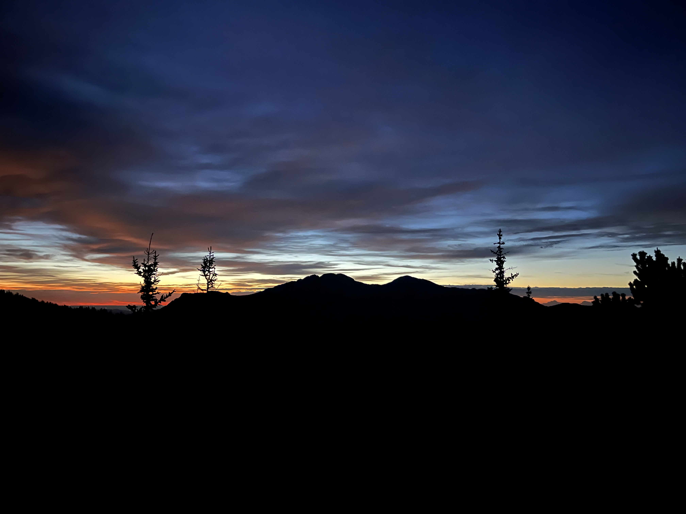
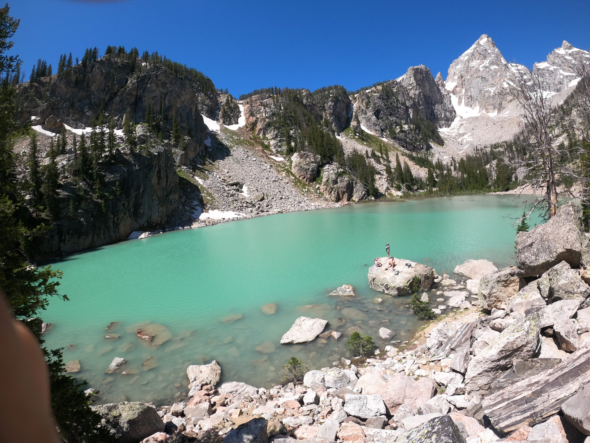

This is the sunrise when hiking to Long's Peak.

This is the view you encounter when reach the end of the Delta Lake trail.

My Mission: To get into the tech industry, plain and simple!
Below I will list some things about me